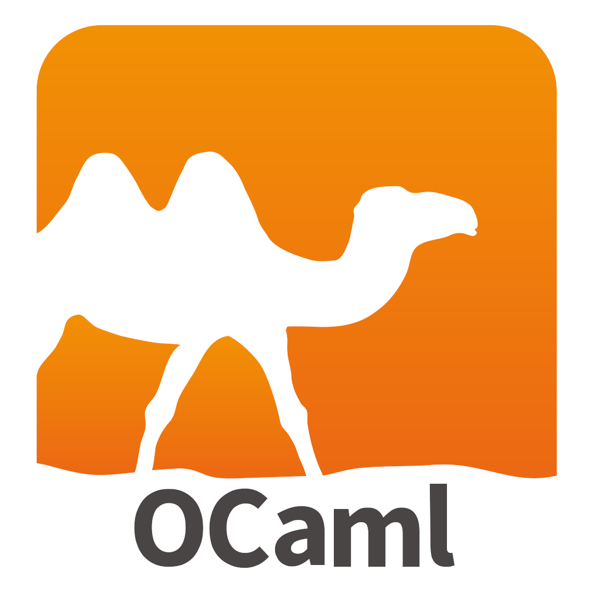

MiniJava: Compilation and Interpretation

The following is a brief description of the final project for CS 251 Principles of Programming Languages that I took in fall 2025. I promise I will write more about my reflections for the course here, when I have time.
Before I get to write about my reflection, let's dive right into the final project: MiniJava:
The project explores the design of object-oriented language semantics by implementing a compact yet expressive subset of Java in OCaml. MiniJava loosely follows the structure of real Java and the JVM: programs are first compiled into a typed abstract syntax tree, and then evaluated by an interpreter operating on that compiled representation. By separating compilation from interpretation, the system mirrors how real runtimes enforce correctness through static analysis before any code is executed.
The first phase focuses on static type checking and compilation. Source programs are parsed into a high-level AST and compiled into a lower-level representation only if they satisfy MiniJava’s typing rules. This includes validating class hierarchies, enforcing subtype relationships, checking method overriding constraints (including covariant return types), and ensuring expressions are used consistently with their expected types. The compiler detects errors such as undefined classes or fields, illegal uses of this, and type mismatches—ensuring that well-typed programs cannot encounter most runtime failures.
The second phase implements the interpreter, which evaluates compiled programs according to Java-style object semantics. Objects are instantiated with default field values, fields are resolved using static types, and method calls are dispatched dynamically based on the runtime class of the receiver. The interpreter maintains environments for variable bindings and object instances, supports inheritance and polymorphism, and precisely models the distinction between static and dynamic typing that underlies Java’s behavior.
Due to course policy, the full implementation code for this project cannot be shared publicly. However, this write-up is intended to document the design decisions, system structure, and conceptual understanding developed throughout the project. I’m always happy to discuss the allocator’s architecture, tradeoffs, and lessons learned in more detail in an academic or interview setting.